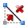
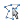

|
In die Karte hinein zoomen |
|
Aus der Karte heraus zoomen |
|
Zoomfenster - Mit gedrückter linker Maustaste ein
Fenster aufziehen. Beim Loslassen der Maustaste wird auf diesen
Ausschnitt gezoomt |
|
Verschieben - Mit gedrückter linker Maustaste wird der aktuelle Kartenausschnitt verschoben |
|
Durch einen Klick in die Karte wird ein neuer Kartenmittelpunkt festgelegt |
|
Auf maximale Kartenausdehnung herauszoomen |
|
Ansicht aktualisieren |
|
Zum vorherigen Kartenausschnitt zurückblättern |
|
Zum nachfolgenden Kartenausschnitt vorblättern (nur möglich, wenn vorher zurückgeblättert wurde) |
 |
Gebäudeinformation anzeigen - Mit einem Klick auf ein Gebäude werden die Potenziale für den Einsatz einer Photovoltaik-
bzw. Solarthermieanlage in Tabellenform angezeigt |
|
Diese Hilfe anzeigen |
|  |
Messen - Nach dem Anklicken funktioniert der Mauszeiger wie ein Maßband. In der linken oberen Ecke des Kartenfensters
werden weitere Werkzeuge angezeigt:
 |
Radiergummi - Mit einem Klick wird die gezeichnete Linie gelöscht |
|  |
Anfangs- und Endpunkt werden geschlossen, um Umfangs- und Flächenberechnungen zu ermöglichen |
|
Messergebnis anzeigen |
|
|
Mit einem Klick werden die aktuellen Koordinaten angezeigt |